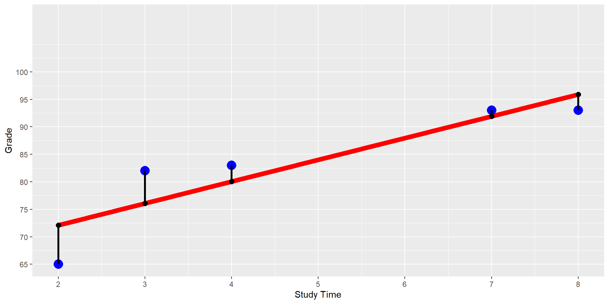

Explained with Linear Regression
Reviewing the basic idea behind linear regression
Learning how how to measure predictive quality with Mean Square Error (\(MSE\)).
Understanding the role of parameters in a machine learning model in general and in linear regression in particular
Calculating optimal regression parameters using OLS
Finding optimal regression parameters by trial and error
Distinguish between unfitted and fitted models
Using the tidymodels package to split observations from a dataset randomly into a training and testing dataset.
Understanding how categorical data such as the sex of a person (female/male) can be transformed into numerical dummy variable.
Being able to distinguish between dummy encoding and one-hot encoding
Using tidymodels including model design and data pre-processing (recipes) to analyze housing prices.
Data Description:
King County House Sale dataset (Kaggle 2015). House sales prices from May 2014 to May 2015 for King County in Washington State.
Several predictor variables. For now we use only \(Sqft\)
We will only use 100 randomly chosen observations from the total of 21,613 observations.
We only use Sqft as predictor variable for now.
Price Sqft
1 517000 1180
2 236000 1300
3 490000 2800
4 129000 1150
5 257000 1400
6 312500 870\[ \underbrace{\widehat{Price}}_\widehat{y}=\underbrace{\beta_1}_m \underbrace{Sqft}_x + \underbrace{\beta_1}_b \]
# A tibble: 2 × 5
term estimate std.error statistic p.value
<chr> <dbl> <dbl> <dbl> <dbl>
1 (Intercept) 52509. 64183. 0.818 4.15e- 1
2 Sqft 240. 30.6 7.84 5.67e-12Unfitted Model: \[ \underbrace{\widehat{Price}}_\widehat{y}=\underbrace{\beta_1}_m \underbrace{Sqft}_x + \underbrace{\beta_1}_b \]
# A tibble: 2 × 5
term estimate std.error statistic p.value
<chr> <dbl> <dbl> <dbl> <dbl>
1 (Intercept) 52509. 64183. 0.818 4.15e- 1
2 Sqft 240. 30.6 7.84 5.67e-12Fitted Model: \[ \underbrace{\widehat{Price}}_\widehat{y}=\underbrace{240}_m \cdot\underbrace{Sqft}_x + \underbrace{52509}_b \]
# A tibble: 2 × 5
term estimate std.error statistic p.value
<chr> <dbl> <dbl> <dbl> <dbl>
1 (Intercept) 52509. 64183. 0.818 4.15e- 1
2 Sqft 240. 30.6 7.84 5.67e-12\[ \begin{align} \widehat{Price}&=240 \cdot Sqft + 52509\\ (+240)&=240\cdot (+1) + (+0)\\ (+480)&=240\cdot (+2) + (+0)\\ (+720)&=240\cdot (+3) + (+0) \end{align} \] For each extra \(Sqft\) the predicted price increases by $240
The variable \(Sqft\) is significant. I.e., the probability that the related coefficient \(\beta_1\) equals zero is extremely small.
The Regression:
\[ \widehat{Grade}_{i} = \beta_{1}StudyTime_{i}+\beta_{2} \]
\[ \widehat{y}_{i} = \beta_{1}x_{i}+\beta_{2} \]
The Goal
Find values for \(\beta_1\) and \(\beta_2\) that minimize the prediction errors \((\widehat{y}_{i}-y_i)^2\)
The Data Table
y
|
x
|
|
|---|---|---|
| i | Grade | StudyTime |
| 1 | 65 | 2 |
| 2 | 82 | 3 |
| 3 | 93 | 7 |
| 4 | 93 | 8 |
| 5 | 83 | 4 |
The Regression:
\[ \widehat{y}_{i} = \beta_{1}x_{i}+\beta_{2} \]
The Goal
Find values for \(\beta_1\) and \(\beta_2\) that minimize the prediction errors \((\widehat{y}_{i}-y_i)^2\)
The Data Diagram
Model123=lm(Grade~StudyTime, data=DataMockup)
PredGrade=predict(Model123, DataMockup)
ggplot(DataMockup, aes(x=StudyTime,y=Grade)) +
geom_line(aes(y=PredGrade), color="red", size=2.7)+
geom_point(size=5, color="blue")+
geom_point(aes(y=PredGrade), color="black", size=2.7)+
geom_segment(aes(x = StudyTime, y = PredGrade,
xend = StudyTime, yend = Grade),size=1.2)+
scale_x_continuous("Study Time", breaks=seq(1,8))+
scale_y_continuous(limits=c(65,110), breaks=seq(60,100,5))
Note, when the data are given (i.e., \(x_i\) and \(y_i\) are given), the \(MSE\) depends only on the choice of \(\beta_1\) and \(\beta_2\) »
Function Call:
Function Definition:»
Calculate optimal values for the parameters (the \(\beta s\)) based on Ordinary Least Squares (OLS) using two formulas (Note, this method works only for linear regression)
We can use a systematic trial and error process.
y
|
x
|
y x
|
x x
|
|
|---|---|---|---|---|
| i | Grade | StudyTime | GradeXStudyTime | StudyTimeSquared |
| 1 | 65 | 2 | 130 | 4 |
| 2 | 82 | 3 | 246 | 9 |
| 3 | 93 | 7 | 651 | 49 |
| 4 | 93 | 8 | 744 | 64 |
| 5 | 83 | 4 | 332 | 16 |
| Grade | StudyTime | GradeXStudyTime | StudyTimeSquared |
|---|---|---|---|
| 416 | 24 | 2103 | 142 |
Grid Search (aka Brute Force):
FctMSE() command to calculate a \(MSE\) for each \(\beta\) pair.Optimizer: Use the R build-in optimizer. Push the start values for \(\beta_1\) and \(\beta_2\) together with the data to the optimizer as arguments. The rest is done by the optimizer.
See the R script in the footnote to see both algorithms in action.»
Data
Sqft: Living square footage of the house
Grade Indicates the condition of houses (1 (worst) to 13 (best))
Waterfront: Is house located at the waterfront (yes or no)
Unfitted Model: » \[ Price=\beta_1 Sqft+\beta_2 Grade+\beta_3 Waterfront_{yes} +\beta_4 \]
DataTrain
Price Sqft Grade Waterfront
1 221900 1180 7 no
2 180000 770 6 no
3 189000 1200 7 no
4 230000 1250 7 no
5 252700 1070 7 no
6 240000 1220 7 noDataTest
Price Sqft Grade Waterfront
1 1230000 5420 11 no
2 257500 1715 7 no
3 291850 1060 7 no
4 229500 1780 7 no
5 530000 1810 7 no
6 650000 2950 9 noOne-Hot Encoding
# A tibble: 4 × 2
Waterfront_yes Waterfront_no
<dbl> <dbl>
1 0 1
2 0 1
3 1 0
4 0 1One-hot encoding is easier to interpret but causes problems in OLS (dummy trap) because one variable is redundant. We can calculate one variable from the other (perfect multicollinearity):
\[Waterfront_{yes}=1-Waterfront_{no}\]
Dummy Coding
We use one variable less than we have categories. Waterfront has two categories. Therefore, we use one variable (e.g., Waterfront_yes):
Dummy Encoding Example
# A tibble: 4 × 1
Waterfront_yes
<dbl>
1 0
2 0
3 1
4 0Note, dummy encoding can be done with step_dummy() in a tidymodels recipe.»
Here is how the recipe later on (in the workflow) transforms the data:
Unfitted Model:
ModelDesignHouses=linear_reg() |>
set_engine("lm") |>
set_mode("regression")
print(ModelDesignHouses)Linear Regression Model Specification (regression)
Computational engine: lm »
# A tibble: 4 × 5
term estimate std.error statistic p.value
<chr> <dbl> <dbl> <dbl> <dbl>
1 (Intercept) -570056. 15133. -37.7 6.63e-297
2 Sqft 180. 3.25 55.2 0
3 Grade 95214. 2548. 37.4 1.65e-292
4 Waterfront_yes 868338. 22200. 39.1 7.12e-319# A tibble: 1 × 12
r.squared adj.r.squared sigma statistic p.value df logLik AIC BIC
<dbl> <dbl> <dbl> <dbl> <dbl> <dbl> <dbl> <dbl> <dbl>
1 0.581 0.581 238574. 7002. 0 3 -208785. 4.18e5 4.18e5
# ℹ 3 more variables: deviance <dbl>, df.residual <int>, nobs <int>Run the Analysis»
https://ai.lange-analytics.com/exc/?file=05-LinRegrExerc100.Rmd